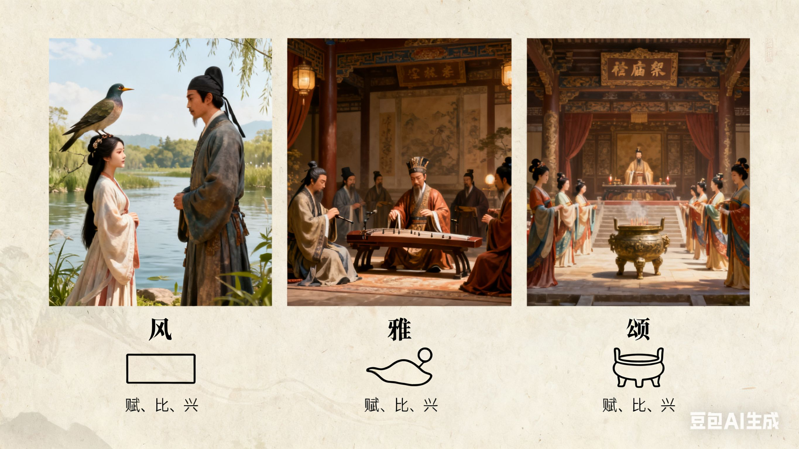
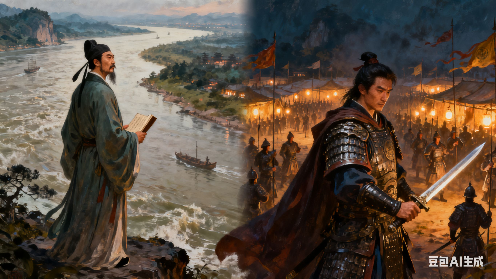
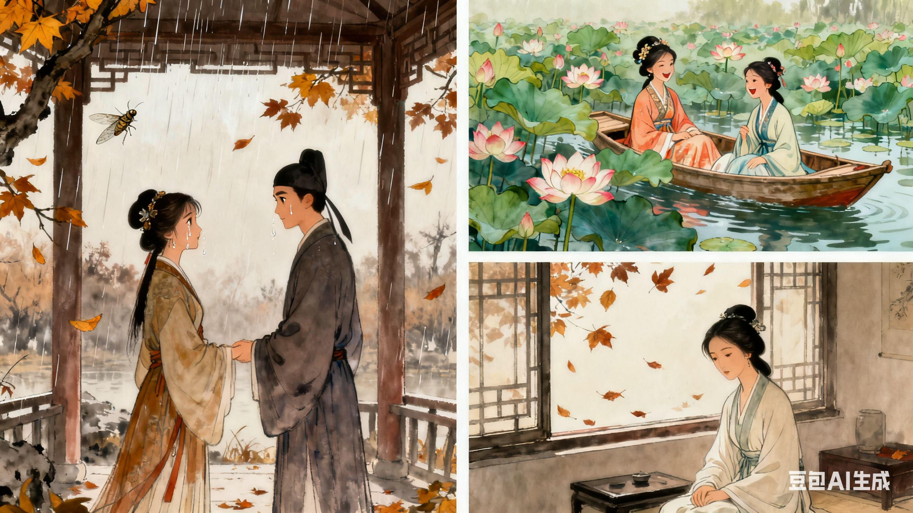
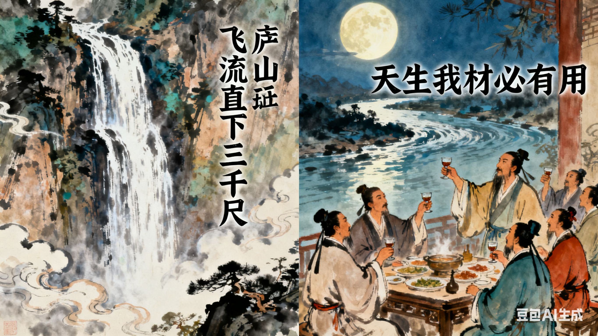
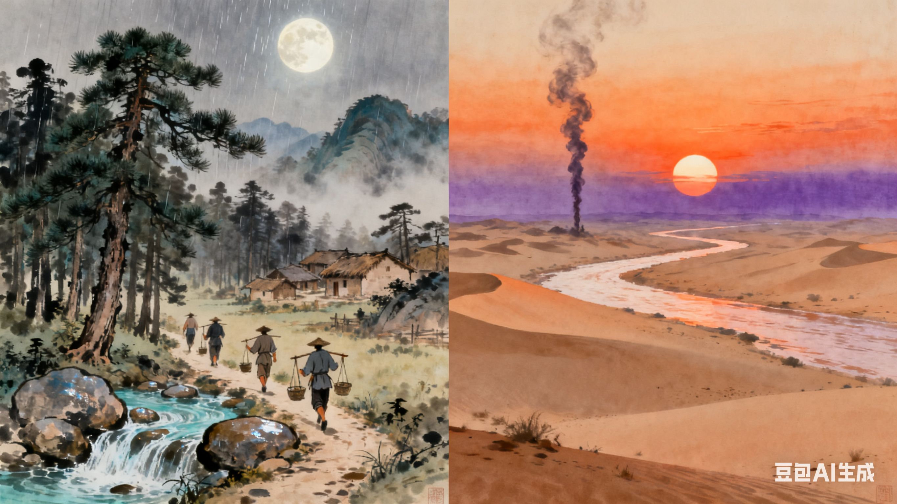

中华古典文学：穿越千年的精神长河
诗词：凝练千年的情感绝唱
先秦两汉诗词：文学的源头之光
中国古典诗词是文学殿堂中最耀眼的明珠，以精炼的语言、优美的韵律、深邃的意境，承载着古人的喜怒哀乐、家国情怀与人生哲思。从《诗经》的质朴吟唱到唐诗的气象万千，再到宋词的婉约豪放，每一首诗词都是一段浓缩的历史，一曲动人的心声。
《诗经》：作为中国第一部诗歌总集，《诗经》收录了西周初年至春秋中叶的 305 篇诗歌，分为 “风”“雅”“颂” 三部分。“风” 是各地的民间歌谣，语言质朴生动，充满生活气息，如《关雎》中 “关关雎鸠，在河之洲。窈窕淑女，君子好逑”，以雎鸠和鸣起兴，描绘男子对美好爱情的向往，情感真挚自然；“雅” 是周王朝都城附近的乐歌，分为 “大雅” 和 “小雅”，多反映贵族生活与政治得失，如《大雅・文王》歌颂周文王的功德，奠定了周人 “敬天保民” 的思想基础；“颂” 是宗庙祭祀的乐歌，庄重肃穆，用于祭祀祖先与神灵，如《周颂・清庙》，营造出庄严神圣的祭祀氛围。《诗经》开创了 “赋、比、兴” 的表现手法，对后世文学影响深远，被誉为 “五经” 之一，是中国文学的源头活水。
楚辞：战国时期，以屈原为代表的楚地诗人创造了 “楚辞” 这一独特的诗歌体裁，其句式灵活，辞藻华丽，充满浪漫主义色彩。屈原的《离骚》是楚辞的巅峰之作，全诗 373 句，2490 字，以诗人自述的口吻，讲述了自己的身世、理想、遭遇与抗争。诗中大量运用香草美人的比喻，如 “扈江离与辟芷兮，纫秋兰以为佩”，以香草象征高洁的品德；通过瑰丽的想象，展现了诗人上下求索、追求理想的执着精神，如 “路漫漫其修远兮，吾将上下而求索”，成为流传千古的励志名句。除《离骚》外，屈原的《九歌》《九章》等作品，或描绘神灵祭祀的奇幻场景，或抒发对故国的眷恋之情，同样具有极高的艺术价值。楚辞的出现，丰富了中国诗歌的体裁与表现手法，与《诗经》并称为 “风骚”，共同构成中国古典诗歌的两大源头。
唐诗：盛世气象的诗意表达
唐代是中国诗歌的黄金时代，据《全唐诗》收录，现存唐诗约 5 万首，涌现出李白、杜甫、王维、白居易等一大批杰出诗人，形成了豪放、婉约、边塞、山水田园等多种诗歌风格，展现了盛唐的繁荣气象与文人的精神风貌。
李白（浪漫主义诗仙）：李白的诗歌充满浪漫主义情怀，想象丰富奇特，气势磅礴豪放，被誉为 “诗仙”。他的《望庐山瀑布》中 “飞流直下三千尺，疑是银河落九天”，以夸张的手法描绘庐山瀑布的雄伟壮丽，展现出大自然的磅礴力量；《将进酒》中 “天生我材必有用，千金散尽还复来”，抒发了诗人自信豁达、狂放不羁的人生态度，尽显盛唐文人的豪情壮志。李白的诗歌语言清新自然，如 “清水出芙蓉，天然去雕饰”，打破了传统诗歌的格律束缚，给人以强烈的艺术感染力。
杜甫（现实主义诗圣）：杜甫的诗歌以现实主义为核心，深刻反映了安史之乱前后的社会动荡与人民疾苦，被誉为 “诗史”，他本人也被尊为 “诗圣”。《三吏》《三别》是杜甫现实主义诗歌的代表作，其中《石壕吏》通过描写官吏深夜捉人征兵的场景，刻画了老妇一家的悲惨遭遇，如 “吏呼一何怒，妇啼一何苦”，字字泣血，控诉了战乱对百姓的摧残；《春望》中 “国破山河在，城春草木深。感时花溅泪，恨别鸟惊心”，以破败的京城景象为背景，抒发了诗人对国家命运的担忧与对亲人的思念，情感深沉真挚。杜甫的诗歌沉郁顿挫，语言凝练精准，注重细节描写，将现实主义文学推向了新的高度。
王维（山水田园诗派代表）：王维的诗歌以山水田园为主要题材，风格清新淡雅，意境悠远，被誉为 “诗佛”。他擅长将绘画技巧融入诗歌创作，达到 “诗中有画，画中有诗” 的艺术境界。《山居秋暝》中 “空山新雨后，天气晚来秋。明月松间照，清泉石上流”，描绘了雨后山村的宁静美景，明月、松影、清泉、山石构成一幅清幽雅致的山水画，让人仿佛置身于世外桃源；《使至塞上》中 “大漠孤烟直，长河落日圆”，以简洁的笔触勾勒出大漠雄浑壮阔的景象，成为千古传诵的名句。王维的诗歌不仅展现了山水田园的自然之美，更蕴含着禅意与哲理，体现了诗人对宁静生活的追求。
宋词：婉约与豪放的情感交织
宋代是词的鼎盛时期，词最初源于民间，后经文人加工创作，形成了独特的文学体裁。宋词根据风格不同，分为婉约派与豪放派，婉约派侧重抒情写景，语言细腻含蓄；豪放派则气势恢宏，题材广阔，展现出文人的家国情怀与人生抱负。
婉约派:柳永是婉约派的早期代表，他的词多描写市井生活与男女之情，语言通俗直白，深受市民喜爱，有 “凡有井水处，皆能歌柳词” 之说。《雨霖铃・寒蝉凄切》是柳永的代表作，“寒蝉凄切，对长亭晚，骤雨初歇”，以凄清的秋景为背景，烘托出恋人离别的伤感氛围；“执手相看泪眼，竟无语凝噎”，通过细节描写，将离别时的不舍之情刻画得淋漓尽致。李清照是婉约派的集大成者，她的词前期多描写少女生活与爱情的甜蜜，如《如梦令・常记溪亭日暮》中 “常记溪亭日暮，沉醉不知归路。兴尽晚回舟，误入藕花深处”，充满天真烂漫的气息；后期因国破家亡，词风转为凄苦哀怨，《声声慢・寻寻觅觅》中 “寻寻觅觅，冷冷清清，凄凄惨惨戚戚”，以叠词开篇，营造出孤寂悲凉的氛围，抒发了对亡夫的思念与对身世的感慨，情感真挚动人。
豪放派:苏轼是豪放派的开创者，他的词打破了婉约派的题材局限，将怀古、咏史、说理等内容融入词中，风格豪放洒脱，意境开阔。《念奴娇・赤壁怀古》中 “大江东去，浪淘尽，千古风流人物”，以长江奔涌的壮阔景象起笔，追忆三国周瑜的英雄事迹，抒发了 “人生如梦，一尊还酹江月” 的旷达情怀；《水调歌头・明月几时有》中 “但愿人长久，千里共婵娟”，以中秋赏月为契机，表达了对亲人的思念与对人生的美好祝愿，成为中秋佳节的经典之作。辛弃疾是豪放派的另一位代表人物，他的词充满爱国情怀与英雄气概，多描写战场生活与收复失地的壮志。《破阵子・为陈同甫赋壮词以寄之》中 “醉里挑灯看剑，梦回吹角连营。八百里分麾下炙，五十弦翻塞外声”，通过梦境展现了诗人渴望驰骋沙场、建功立业的豪情；“了却君王天下事，赢得生前身后名。可怜白发生”，则抒发了壮志未酬的悲愤之情，情感慷慨激昂，令人动容。